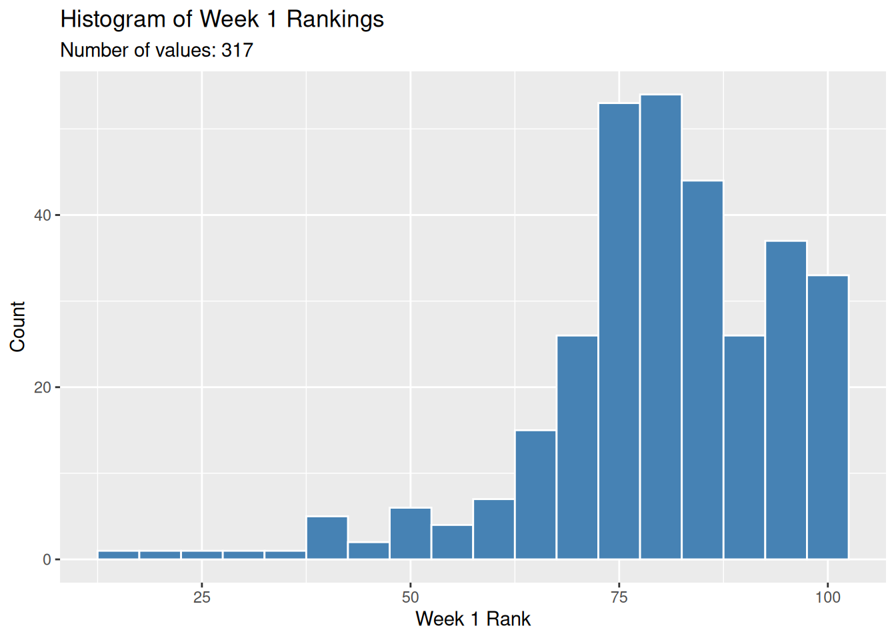
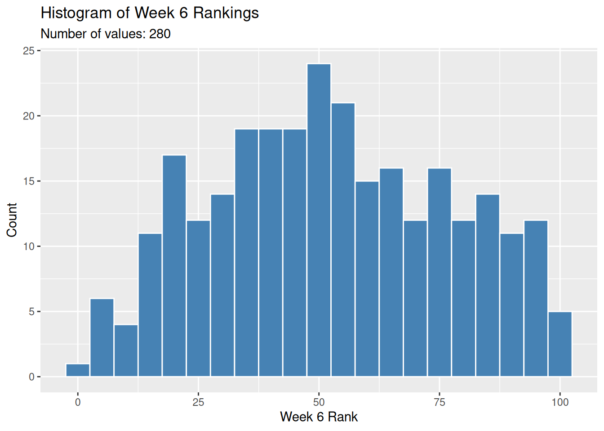
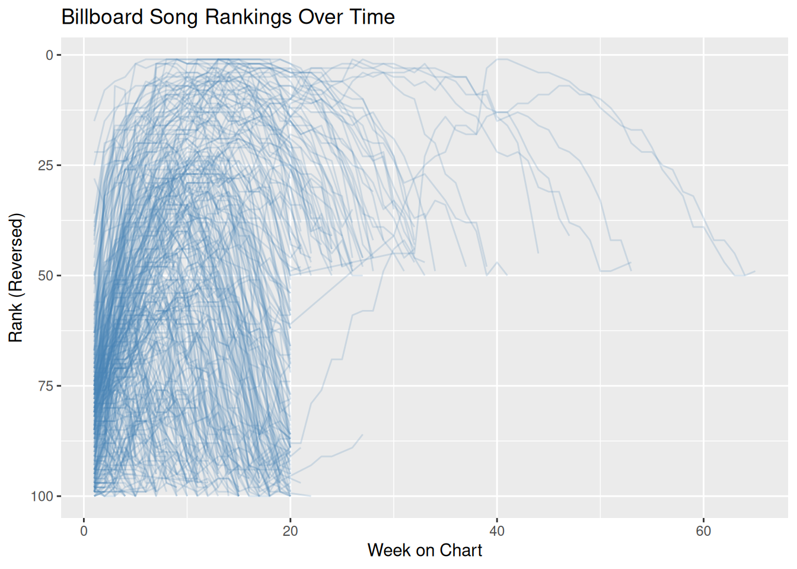
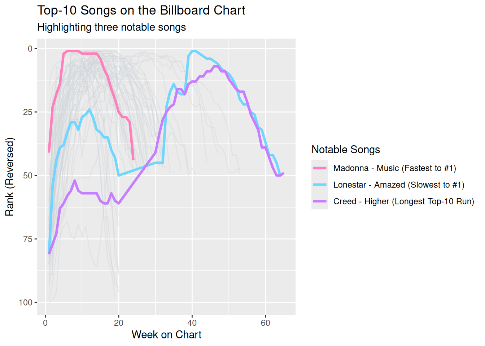

# A tibble: 317 × 7
artist track date.entered wk1 wk2 wk3 wk4
<chr> <chr> <date> <dbl> <dbl> <dbl> <dbl>
1 2 Pac Baby Don't Cry (Keep... 2000-02-26 87 82 72 77
2 2Ge+her The Hardest Part Of ... 2000-09-02 91 87 92 NA
3 3 Doors Down Kryptonite 2000-04-08 81 70 68 67
4 3 Doors Down Loser 2000-10-21 76 76 72 69
5 504 Boyz Wobble Wobble 2000-04-15 57 34 25 17
6 98^0 Give Me Just One Nig... 2000-08-19 51 39 34 26
7 A*Teens Dancing Queen 2000-07-08 97 97 96 95
8 Aaliyah I Don't Wanna 2000-01-29 84 62 51 41
9 Aaliyah Try Again 2000-03-18 59 53 38 28
10 Adams, Yolanda Open My Heart 2000-08-26 76 76 74 69
# ℹ 307 more rowsAnalyzing Music Data
# A tibble: 1 × 2
min max
<date> <date>
1 1999-06-05 2000-12-30
Warning: Removed 37 rows containing non-finite outside the scale range
(`stat_bin()`).
# A tibble: 6 × 3
week present missing
<fct> <int> <int>
1 wk1 317 0
2 wk4 300 17
3 wk10 244 73
4 wk20 146 171
5 wk40 7 310
6 wk76 0 317# A tibble: 2 × 2
reentered n
<lgl> <int>
1 FALSE 302
2 TRUE 15# A tibble: 4 × 2
change_category n
<chr> <int>
1 got worse 27
2 improved 251
3 missing by week 6 37
4 stayed the same 2# A tibble: 1 × 1
median_change
<dbl>
1 -27
# A tibble: 6 × 6
artist track first_rank best_rank first_week_at_best total_weeks
<chr> <chr> <dbl> <dbl> <int> <int>
1 2 Pac Baby Don't C… 87 72 3 7
2 2Ge+her The Hardest … 91 87 2 3
3 3 Doors Down Kryptonite 81 3 32 53
4 3 Doors Down Loser 76 55 7 20
5 504 Boyz Wobble Wobble 57 17 4 18
6 98^0 Give Me Just… 51 2 7 20# A tibble: 3 × 7
note artist track first_rank best_rank first_week_at_best total_weeks
<chr> <chr> <chr> <dbl> <dbl> <int> <int>
1 Fastest to #1 Madon… Music 41 1 6 24
2 Slowest to #1 Lones… Amaz… 81 1 40 55
3 Longest run … Creed High… 81 7 46 57Year 2000 Billboard Chart Insights
An analysis of the 317 tracks entering the Billboard Hot 100 in the year 2000 reveals three standout records:
- Fastest Climb to #1: Madonna’s “Music” reached the top spot in just 6 weeks (entering the chart at #41).
- Slowest Climb to #1: Lonestar’s “Amazed” took 40 weeks of climbing to reach #1 (entering at #81).
- Longest Run on Chart: Creed’s “Higher” set the endurance record, spending 57 weeks on the chart (peaking at #7).
